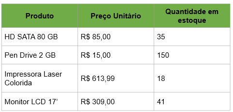
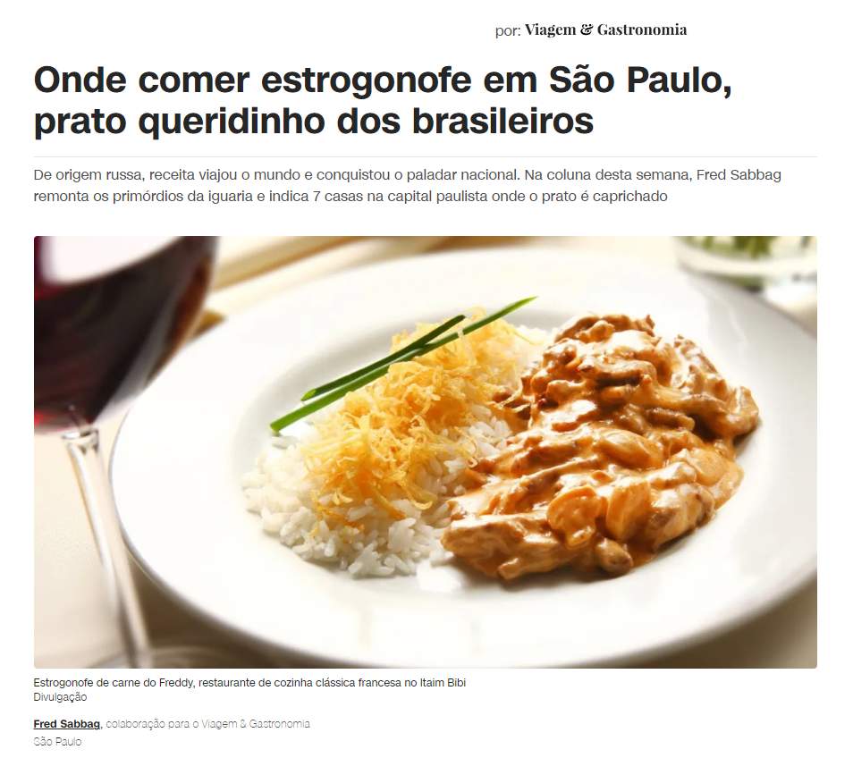

Atividade HTML
Nome: Victor
Profissão: Vendedor
Idade: 24
Signo: Escorpião
Strogonoff de Frango Sadia
Ir para o site da receita
Modo de preparo
Em uma panela, aqueça o azeite e refogue a cebola e o alho, em seguida acrescente as tiras de frango;
Tempere com o sal e com a páprica;
Refogue e adicione a mostarda, o ketchup, o molho inglês e os champignons;
Cozinhe por mais 1-2 minutos e junte o creme de leite (não deixe ferver, apenas aquecer);
Sirva ainda quente.
Ingredientes
1 colher (sobremesa) de azeite
400g de Tiras de Frango Na Receita Sadia
1 colher (café) de sal
1 colher (café) de páprica picante
3 colheres (sopa) de ketchup
1 colher (sopa) de mostarda
1 colher (sopa) de molho inglês
1 xícara (chá) de champignons cortados ao meio
1 lata de creme de leite
3 colheres (sopa) de cebola cortada em cubos pequenos
1 dente de alho cortado em cubos pequenos
Tabela por imagem:

Tabela:
Produto
Preço Unitário
Quantidade em estoque
Pen Drive 2 GB
R$ 15,00
150
Impressora Laser Colorida
R$ 613,99
18
Monitor LCD 17'
R$ 309,00
41

Ir para notícia